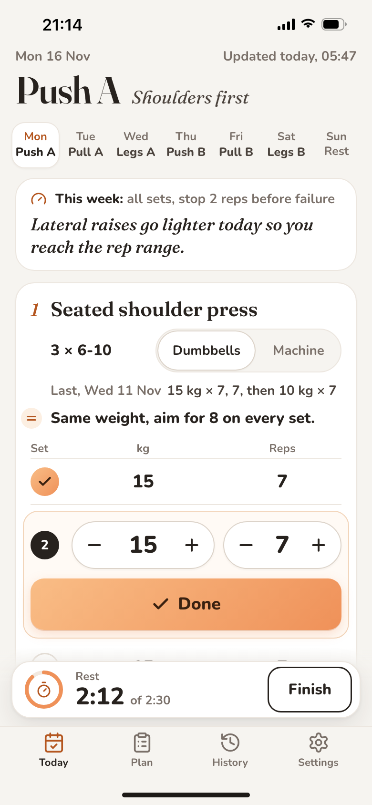
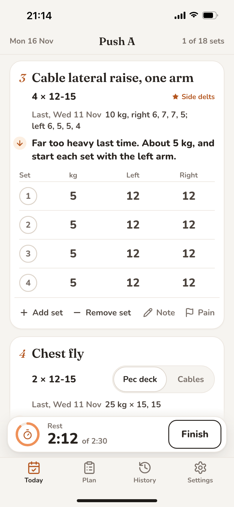
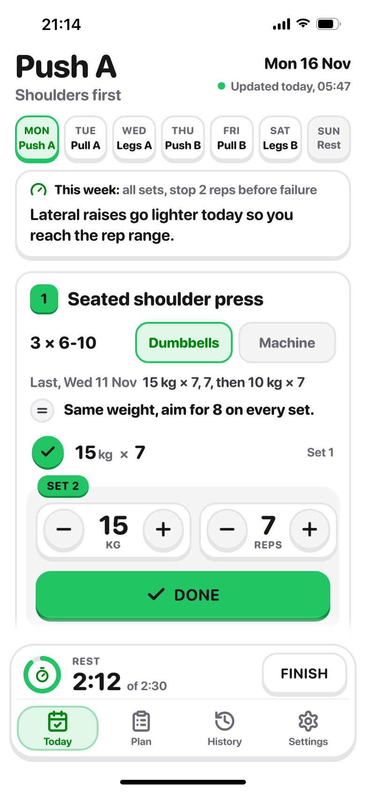
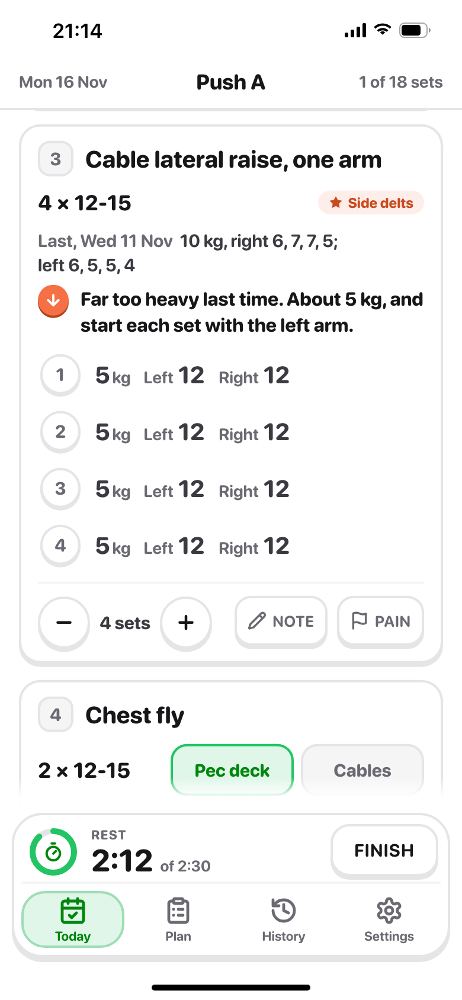

A, calm
Paper notebook: serif titles, a quiet table of sets, one peach accent.




B, bright
LangOS: heavy rounded type, chunky buttons on a lip, green for done.


Mid-session: set 1 done, rest timer running, set 2 ready. Same content in both. Pick A or B.
Paper notebook: serif titles, a quiet table of sets, one peach accent.


LangOS: heavy rounded type, chunky buttons on a lip, green for done.

